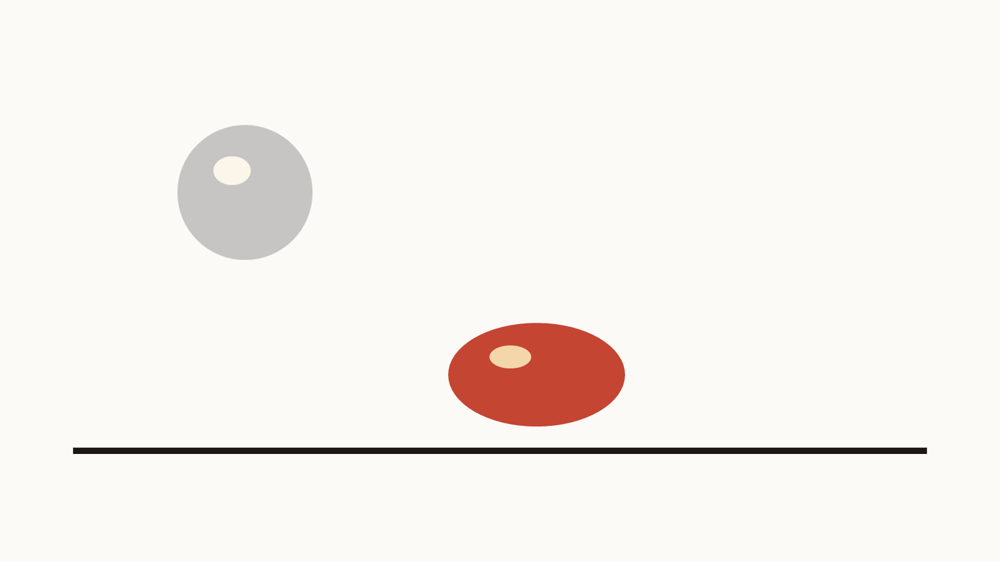

Onion skin
Create Guide captures the previous slide as a semi-transparent overlay. Clear Guide removes it from this slide. Clear All Guides strips every one in the deck.
PowerPoint add-in for Windows
Frame-by-frame animation, on the slides you already have. Onion Tools ghosts the previous frame onto the page, then exports a GIF, a video, or stills — and leaves the guide behind.
CC BY-NC 4.0 · free to use and share · not for paid work without asking

Create Guide captures the previous slide as a semi-transparent overlay. Clear Guide removes it from this slide. Clear All Guides strips every one in the deck.
Off leaves PowerPoint alone. Classic drops a guide on each new slide. Duplicate copies the previous slide’s shapes and puts a guide underneath.
PNG or SVG per slide, an animated GIF, or an MP4 at 1080p and 30fps. Guides are left out. Export the whole deck, or only the slides you selected.
Each new slide receives a ghost of the one before it. Your drawings stay put. The guide is only there so the next pose lines up.
Each new slide starts as a copy of the previous one, with an onion-skin guide under the shapes. Useful when the next frame is a small change.
Windows PowerPoint, with macros allowed for the add-in. Use Export → Set output folder… so GIFs land somewhere you can find. Building from source is written up in the install notes.